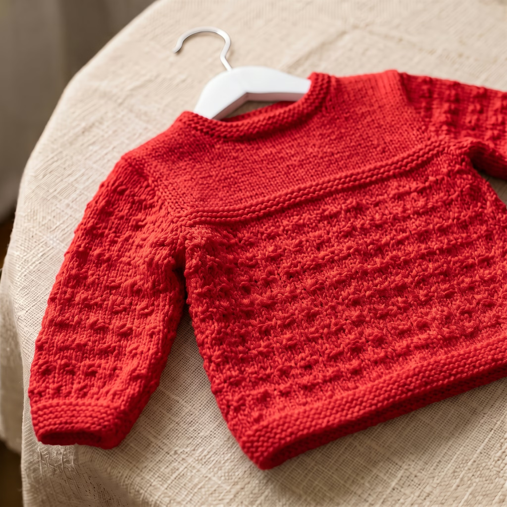
01 · receita digitalCasaco Bela
Receita digital
Receitas digitais de crochê para bebês
Transforme fios em peças encantadoras para bebês
com nossas receitas digitais de crochê, criando
roupinhas, mantas e sapatinhos feitos à mão com muito amor e carinho.
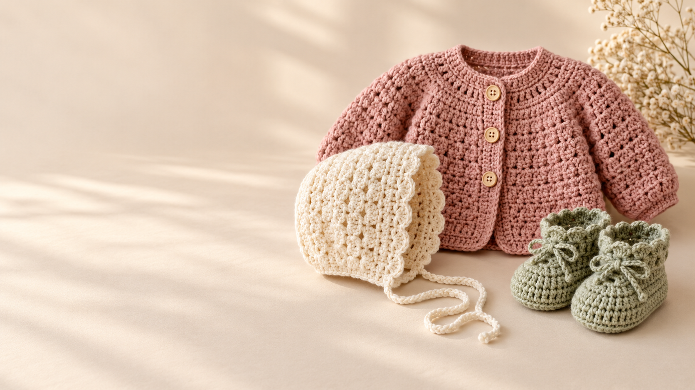
Um carinho em cada ponto
Passo a passo claro, pensado para acompanhar você desde o primeiro ponto

01 · receita digitalReceita digital
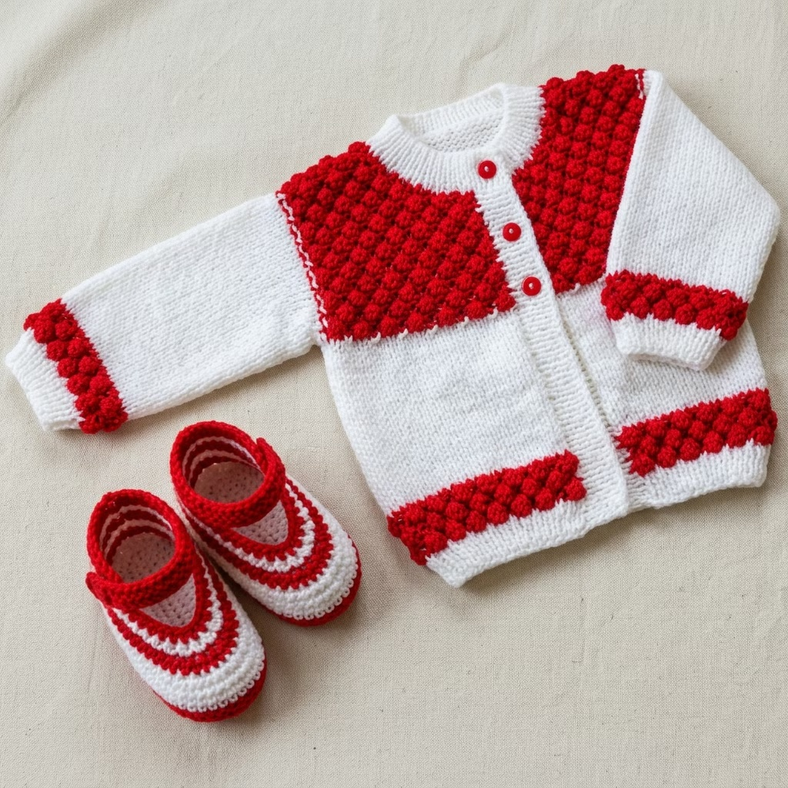
02 · receita digitalReceita digital
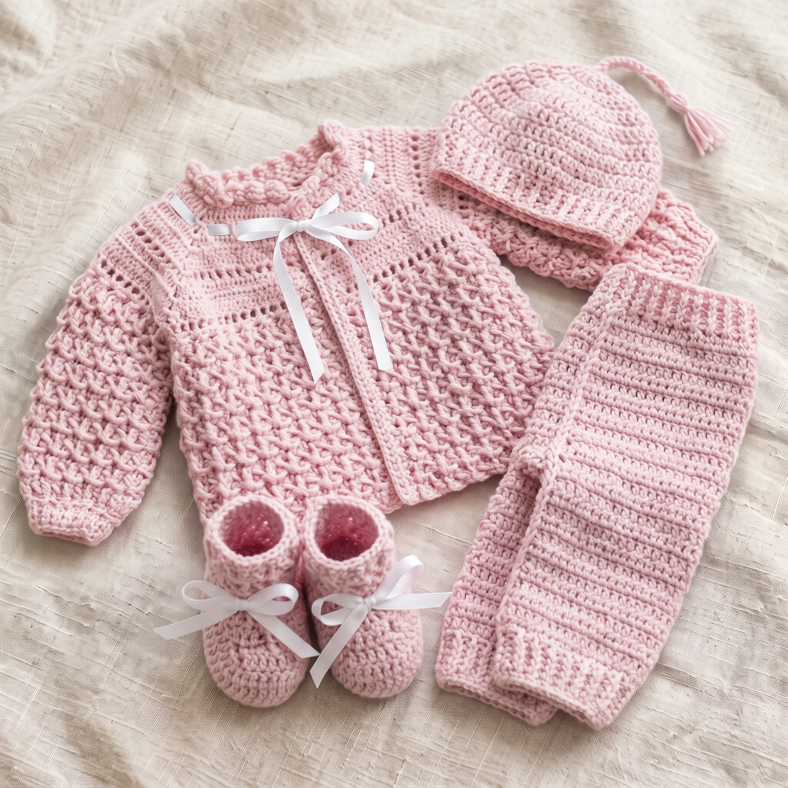
03 · receita digitalReceita digital
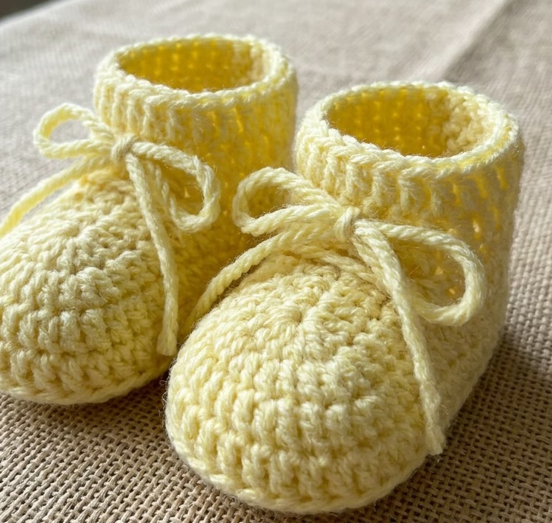
04 · receita digitalReceita digital
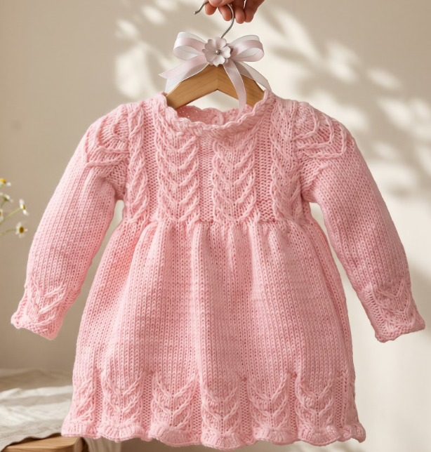
05 · receita de tricôReceita de tricô
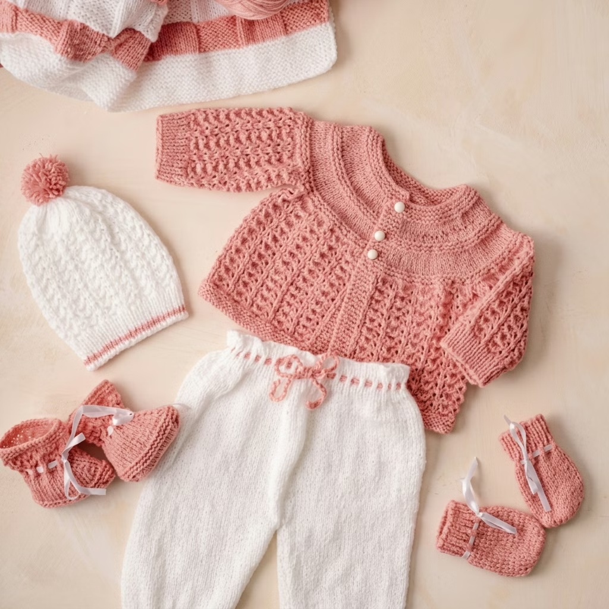
06 · receita digitalReceita digital
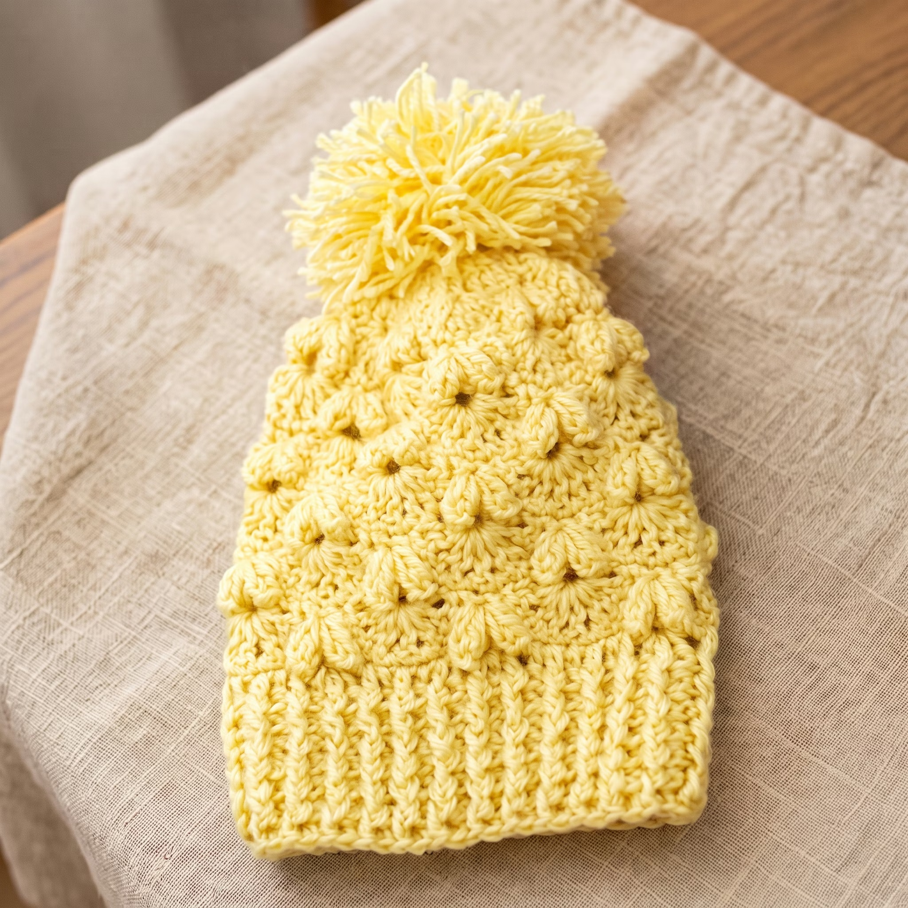
07 · receita digitalReceita digital
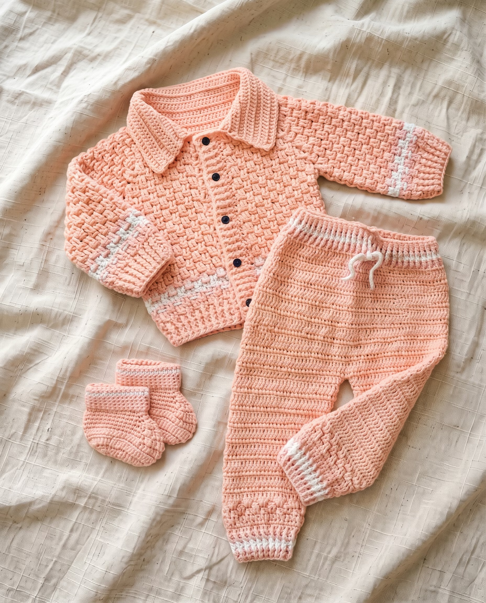
08 · receita digitalReceita digital
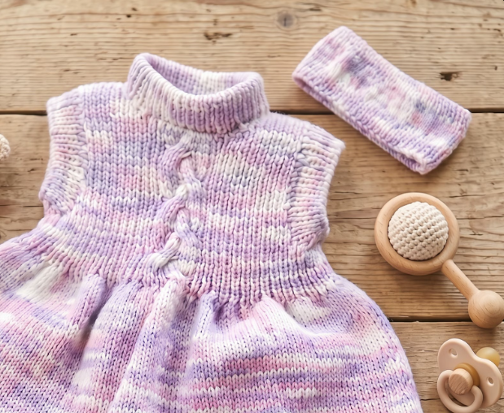
09 · receita digitalReceita digital
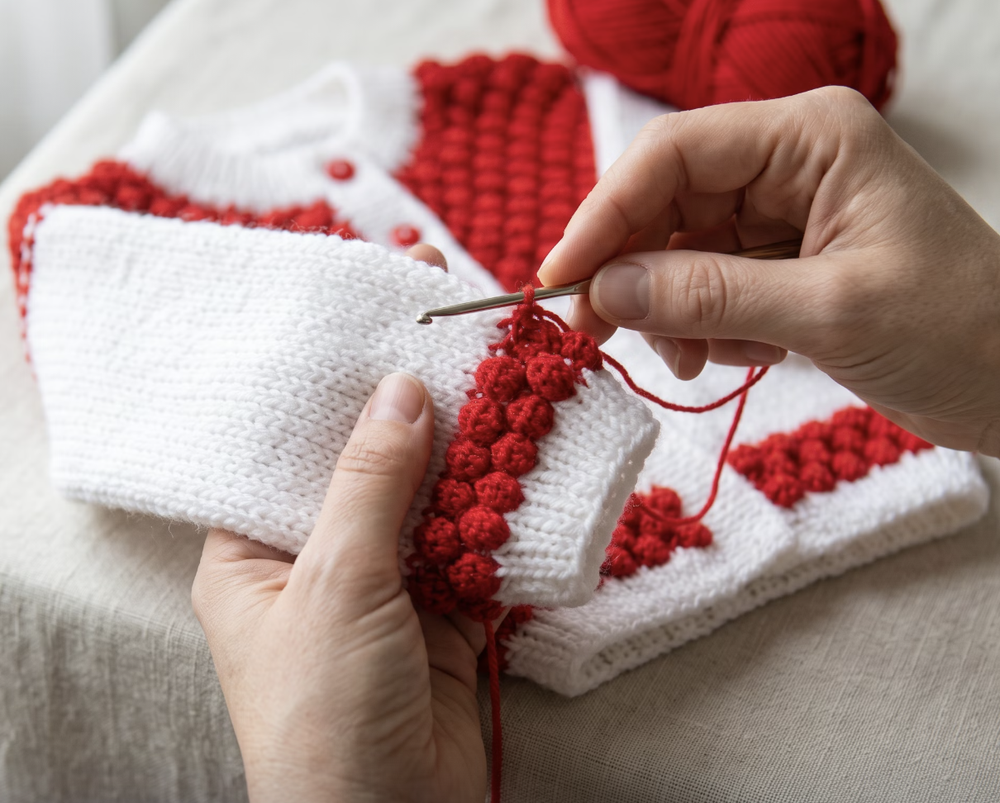
feito com calma, ponto por pontoDo primeiro ponto ao último
Encontre o projeto que combina com você.
O e-book digital chega para você começar.
Acompanhe instruções feitas para serem simples.
Peças pequenas, feitas com um amor que não cabe no novelo.
✳Compra e entrega
Escolha seu modelo, conclua o pagamento pela Eduzz e receba sua receita digital com todo o carinho.
Adicione seus modelos favoritos ao carrinho para organizar seu pedido.
Conclua o pedido pelo checkout seguro da Eduzz e escolha uma das opções de pagamento disponíveis.
Depois da confirmação do pagamento na Eduzz, enviamos sua receita digital pelo WhatsApp informado na compra.
Baixe o e-book e acompanhe o passo a passo para começar sua peça.
Ficou com alguma dúvida? Estamos por aqui para ajudar.
Tirar dúvidas pelo WhatsAppPode perguntar
As receitas são digitais. Depois da compra, você recebe o acesso para baixar e consultar no seu celular, tablet ou computador.
As instruções são organizadas para acompanhar cada etapa. Confira a descrição de cada e-book para ver o nível indicado e os materiais necessários.
Sim. Você pode consultar a receita na tela ou imprimir uma cópia para acompanhar seu projeto.
Não precisa ser expert! Nossas receitas são explicadas passo a passo, com orientações para ajudar você durante a confecção. E, se surgir alguma dúvida, você também conta com suporte para não precisar fazer tudo sozinha!
Sim! Nossas receitas contam com instruções detalhadas, gráficos e guias de pontos para facilitar o seu aprendizado e ajudar você a criar cada peça com mais confiança.
Cada receita possui suas próprias indicações de tamanho, para que você saiba exatamente para qual fase do bebê a peça foi pensada. Confira os detalhes de cada modelo antes de começar!
Sim! Você pode acessar suas receitas pelo celular, tablet ou computador, sempre que quiser. E, se preferir acompanhar cada etapa no papel, também pode imprimir o e-book.
Sim! Você pode transformar nossas receitas em lindas peças de crochê feitas à mão e comercializar suas criações.
Sim! Após a compra, você terá acesso vitalício à receita adquirida, podendo consultá-la sempre que quiser, sem se preocupar com o prazo de acesso.